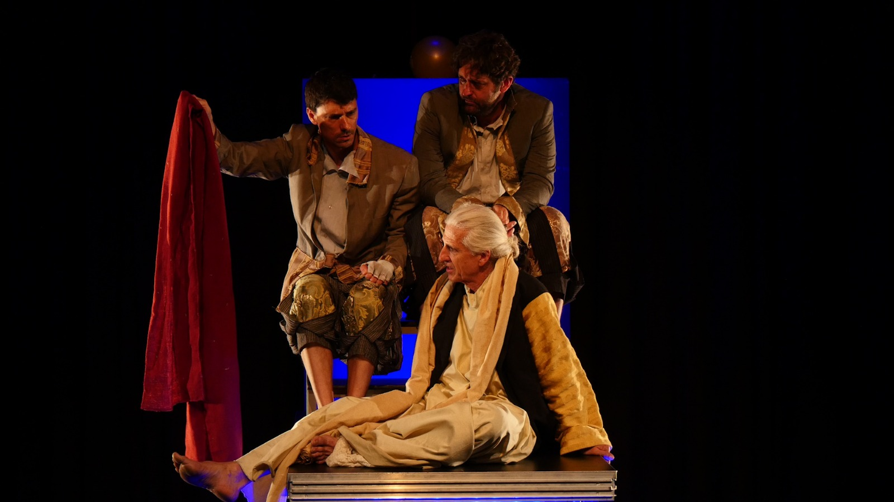
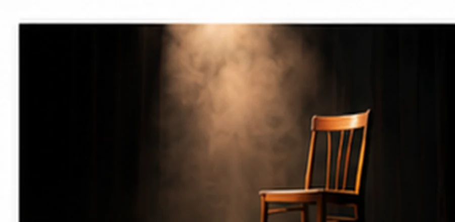
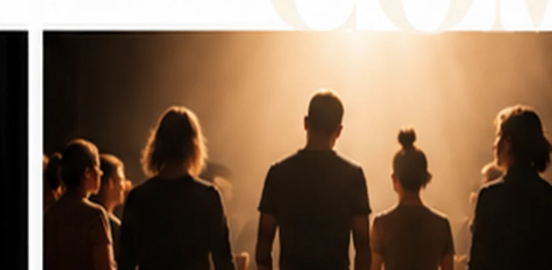
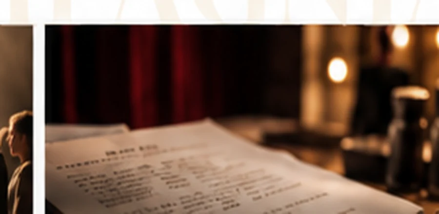

ITACA
Associazione Teatrale
ITACA Associazione Teatrale è una compagnia fondata a Torino nel 2005 e diretta da Marco Alotto. I progetti artistici che porta avanti spaziano dal teatro classico al dramma contemporaneo, in una continua ricerca sperimentale.
Itaca ti ha dato il bel viaggio.
La compagnia
Un teatro di ricerca che muove dai classici

I nostri spettacoli
I membri della compagnia
Progetti e collaborazioniAccordatela parola al gestoe il gesto alla parola.
La scuola di recitazione
I nostri percorsi di formazione attoriale
Se avessi una scuola di recitazione, il lavoro non inizierebbe dal personaggio, dalla situazione, dal pensiero o dal testo; e non cercheremmo di evocare aneddoti del nostro passato per arrivare a ricreare episodi, per quanto drammatici. Inizieremmo invece col fare rumore, piccoli rumori, poi rumori più forti, poi semplici movimenti, poi movimenti più complessi, per scoprire a che punto il movimento si trasforma in parola e a che punto la parola esige il movimento.